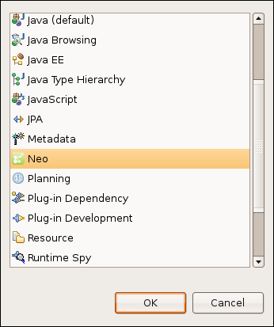

Basic tutorial
Using Neoclipse is easy! This tutorial will show you the basic steps involved.
Prerequisites
To run the standalone Neoclipse application, you need to have Java 1.5+ installed. To run the Eclipse plug-in, Eclipse 3.4 (Ganymede) or later is needed.
Setting up the preferences
Running the example code
Opening the Neo4j perspective
To open the Neo perspective, select Window > Open Perspective > Other... and then select Neo4j in the list.
